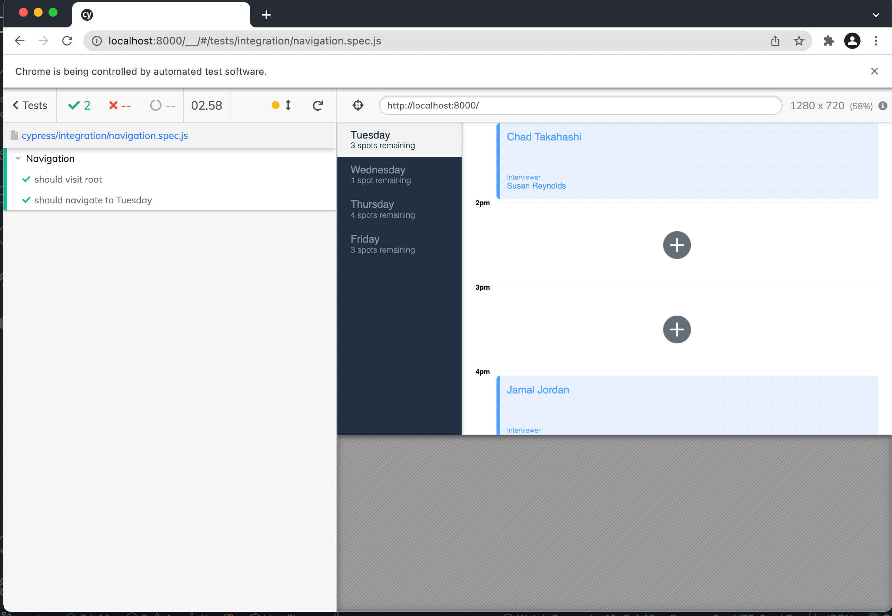

Interviewer Scheduler
Booking Interview simply with clean UI
Easy to book an Appointment
This project is the my first React project, and build for easy booking an interview with interviewer by making an scheduleer, and store each interviwers' avaiable time in the backend server. If any person book an interview with interviewer, fetch the data to the backend server, insert the person on their time. Also the UI on that time will be change.
On this Project, Have to understand what is the stateful and unstateful components and great experinece of the famailer with React. Even though it was not easy, but I am really friendly with the React for front-end now, and backend server with the node-js was the breaktime for me in this project. In this time, I do not have any knowledge of database, so used the backend server as a database, and store the data.
Automate Testing and UI StoryBook

In this projects, each UI is desgined by the storybook and tested the funtions of the UI. For example, press the button, update the source correctly. After using the StoryBook, I can be more focus on the feature and desgin of the UI and spent less time for the testing and fixing the bug.
Moreover, I used many test frameworks in this project. Not even the StoryBook, Mocha/Chai for the unit test and Cypress for end-to-end automated testing simulation. In the first time of using the Cypress, it gave me fresh shock. testing as a user/customer automate! That was fun time, so I interested more in the automate testing. This project is the one of the most used testing framework from my projects.